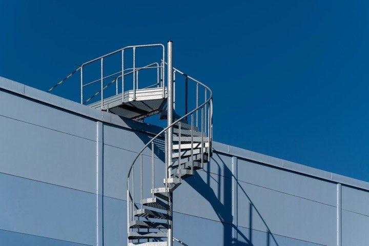
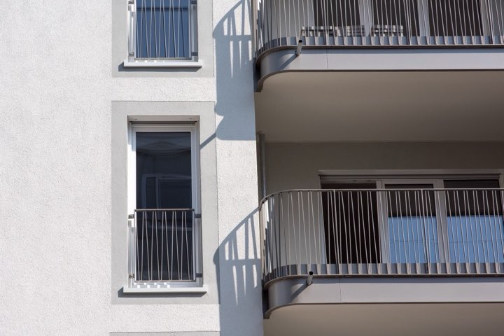
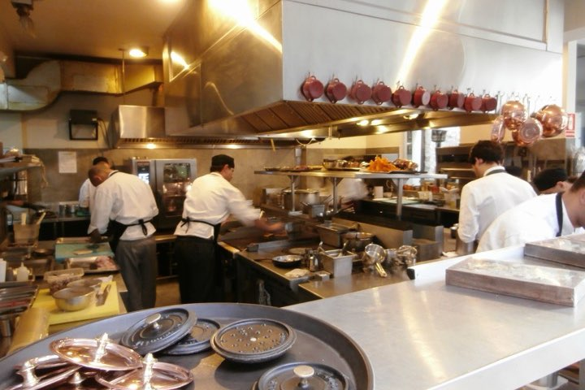

Pereiti prie turinio
Plieno linija
Meniu
Pradžia
Paslaugos
Darbai
Apie
Kontaktai
Skambinti
Pradžia
Darbai
Darbai
Trys darbai iš pastarųjų metų.

Sraigtiniai laiptai prie sandėlio
Vilniaus r., Nemėžis

Balkonų turėklai, 14 butų
Vilnius, Šnipiškės

Nerūdijančio plieno darbastaliai
Vilnius, restorano virtuvė
Visos paslaugos ir kas į jas įskaičiuota
Išmatuokime ir pasakykime tikslią kainą
Gauti pasiūlymą
Uždaryti